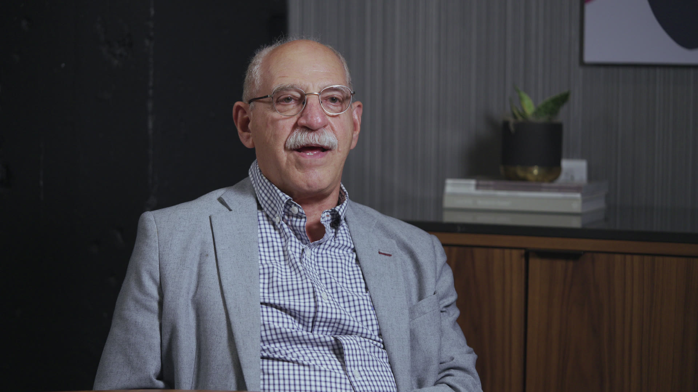
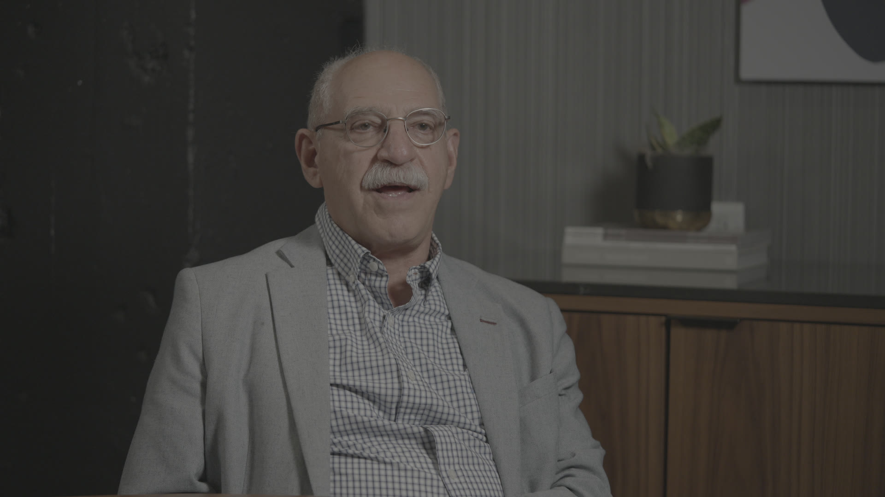
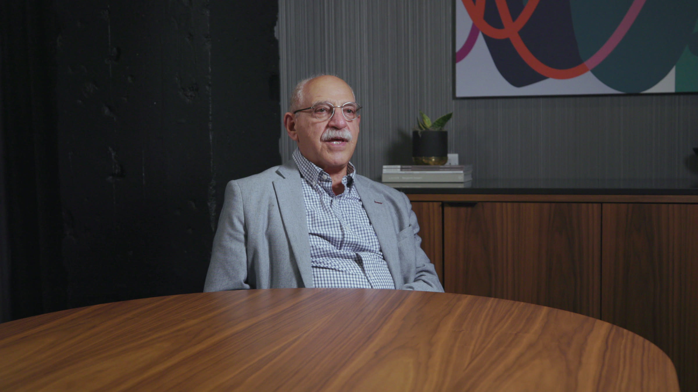

Speedrun 0.4A video editor for the Mac
Ask for the cut. Finish it by hand.
Speedrun is a Mac video editor with Claude built in. Ask for a cut, and Claude syncs your cameras, reads the transcripts and builds a real multi-track timeline with Speedrun's own tools. Then trim, retime, grade and mix it yourself, and hand it to Premiere.
01Claude builds the edit
Real tools. A real timeline.
Claude doesn't hand you a script to import. It edits inside Speedrun with 37 editing tools, so every step lands on the timeline while you watch, and the whole request is one undo. Drop in a notes file, media, bins or sequences to show it what you mean.
02Rounds of notes
Leave a note. Claude takes it from there.
Press M where something's off and write what you want. Type / in the Claude box to point at the note. Before Claude changes anything, Speedrun keeps the cut as it was, so every round of notes is a new version.
- /Point at markersType /feedback, /selects or any tag to list those markers, or /marker for all of them. Pick one and Claude gets its frame and full note.
- V2Every round is a versionThe open sequence becomes Name_V2, and a copy of the cut as it was goes into a z_OLD CUTS bin.
- DoneReview what's addressedNotes Claude has dealt with get a green dot. When you've checked them, delete them in one click or keep them.
- SelectsClip markers tooMark great moments in the footage itself, and Claude builds first cuts from them. Markers go to Premiere with their notes and tags.
03By hand
The timeline is still yours.
What Claude makes is ordinary clips on ordinary tracks. Pick up any of it and keep going, with the tools editors already know.
04Color
Log in. Graded out.
Give each camera its .cube LUT and every clip from it is graded, in the viewer, the source monitor and the export. Then fine-tune exposure, temperature, tint, contrast and saturation, or ask Claude to find the LUTs and match the angles.


05Transcript
Cut from the words.
Speedrun transcribes on your Mac, down to the word. Claude searches the transcript to find takes and snaps each cut to a pause. You can click a sentence to jump there, right-click to add it to the timeline, or export captions as SRT.
06Export
Finish it anywhere.
Export the finished movie, or hand the cut to Premiere Pro with its tracks, levels, fades, dissolves, keyframes and markers intact. Every export starts at 01:00:00:00.
Movie ⌘M
- H.264, HEVC or ProRes
- Sequence size, 1080p or 720p
- Loudness to −16 LUFS, with a limiter
Premiere XML
- Every track, level, fade and dissolve
- Position, scale and keyframes
- Markers with notes and tags
EDL
- CMX 3600
- Camera source timecode
- One per video track, with locators
Captions
- SRT from the transcripts
- In timeline time
- Only what's in the cut
07On your Mac
Your footage stays where it is. Speedrun edits it in place, never copies or uploads it, and transcribes on your Mac.
Claude works from the transcript and the timeline, and looks at still frames it renders to check its work. It runs through your own Claude Code sign-in, and connects to Speedrun through a private bridge that only accepts connections from this Mac.
08Get started
Four steps to a first cut.
Speedrun is free. Claude's work counts toward your Claude plan or API usage, like any other Claude Code session.
- Get Claude CodeSpeedrun runs your own Claude Code and its sign-in, so company setups work too. Run
claudein Terminal once to sign in. - Install SpeedrunOpen
Speedrun-0.4.1.dmgand drag Speedrun into Applications. - Open it onceThe first launch needs a stop in Privacy & Security, shown below. After that it opens like any app.
- Ask for a cutMake a project, drag in your footage, and tell the Claude tab what you want: "Sync the cameras and cut the intro from my notes."
If macOS won't open Speedrun
- Speedrun isn't notarized by Apple yet, so macOS says it can't check it. Click Done.
- Open System Settings → Privacy & Security, scroll to the Speedrun message and click Open Anyway.
- Confirm with your password. macOS remembers.
Speedrun also asks once for access to the folders with your footage, and for speech recognition to make transcripts.
Questions
What do I need?
A Mac with Apple silicon running macOS 26, and Claude Code installed and signed in. Transcription runs on your Mac.
Does Claude see my footage?
Claude reads the transcript and the timeline, and looks at still frames it renders to check the grade, framing and graphics. Your media files are never copied or uploaded.
Do I need ffmpeg?
No, but with ffmpeg installed, Speedrun can also read MP4 and Sony XAVC timecode, make cleaned-up dialogue files, and convert QuickTime Animation graphics. With Homebrew:
brew install ffmpegWhere are my projects saved?
A project is a Name.speedrun folder with a readable project.json and the Claude conversation. Files Speedrun makes, like proxies, converted graphics and cleaned dialogue, go in a Name Media folder next to it.
How do I uninstall it?
Drag Speedrun from Applications to the Trash. To remove its waveform cache and settings too, delete these:
~/Library/Caches/Speedrun~/Library/Preferences/com.tlatvys.speedrun.plistYour projects and footage stay where you saved them.

Make the cut.
Free for macOS 26 on Apple silicon. Bring your footage and a sentence about what you want.